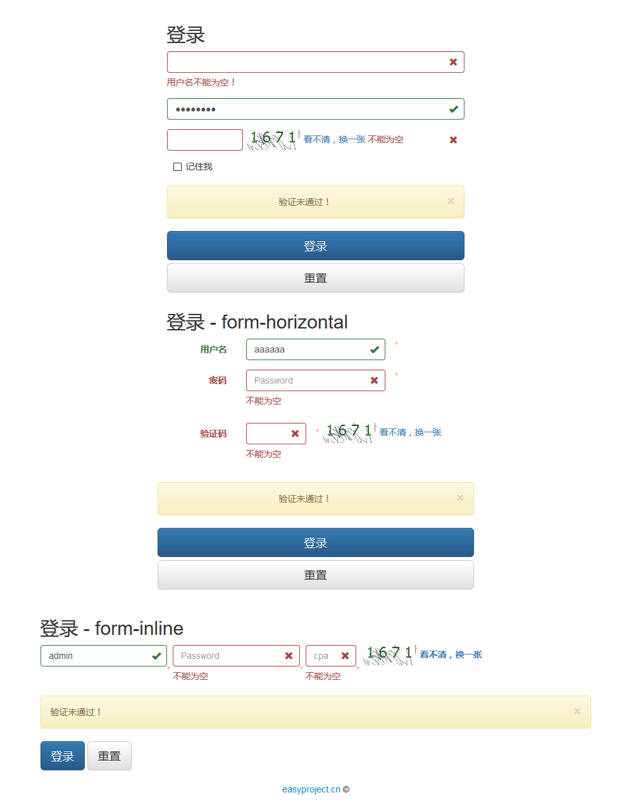
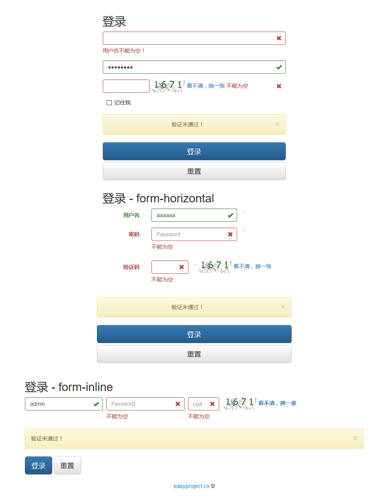

EasyCheck(Echeck)，是一个基于 jQuery 的前端 JavaScript 表单验证框架，无需编程通过 HTML 增强即可完成表单验证工作，简化前端开发工作，并保持统一验证风格，提高效率。并提供灵活的自定义接口，支持基于验证引擎的插件扩展。
主要特点：
轻量级，无需 JS 编程
支持基于类、基于属性和组合验证器，内置能满足日常开发的十多种常用验证器
文本框验证样式自动切换
默认、错误和正确三种提示消息内容，提示消息位置的自定义
客户端防止重复提交功能
异步验证支持，支持 ES6 Promise 编程（验证码在不支持 Promise 的环境时，自动回退到同步验证）
服务器验证消息处理，手动添加和清除验证消息（如页面提交到服务器校验转发回的消息，Ajax 的消息...）
扩展性，支持用户开发注册新验证器
插件支持，已支持验证提示插件：DIV, ToolTip, Bootstrap3
兼容性：
1.9+, 2.X, 3.X Bootstrap 验证插件的兼容性与 Bootstrap 最低兼容要求一致
支持插件：
说明：EasyCheck 与 ECheck 插件为同一插件。在早期 ECheck 对应英文版，EasyCheck 对应中文版，在
4.0.0版本后，通过语言文件控制，不再按地区区分下载。

添加 CSS 和 JavaScript 文件模板：
<!-- EasyCheck start -->
<!-- 验证插件需要的 CSS（div, div2, tooltip, bootstrap3） **如果存在** -->
<link rel="stylesheet" type="text/css" href="easycheck/plugins/XXX/easycheck-XXX.css"/>
<!-- jQuery 必须在第一位 -->
<script type="text/javascript" src="easycheck/jquery-1.12.4.min.js"></script>
<!-- 引入验证文件 -->
<!-- 1. 单独引入 -->
<!-- easy.easycheck.min.js -->
<script type="text/javascript" src="easycheck/easy.easycheck.min.js"></script>
<!-- plugin 插件（div, tooltip, bootstrap3） -->
<script type="text/javascript" src="easycheck/plugins/XXX/easy.easycheck-XXX.js"></script>
<!-- 2. 使用 all 方式引入 -->
<!-- easy.easycheck.min.js + easy.easycheck-XXX.js -->
<!--
<script type="text/javascript" src="easycheck/plugins/div/easy.easycheck-div-all.min.js"></script>
-->
<!-- EasyCheck 语言文件: i18n 消息 -->
<script type="text/javascript" src="easycheck/lang/easy.easycheck-lang-language_COUNTRY.js"></script>
<!-- 可选配置参数 -->
<script type="text/javascript">
// EasyCheck.formFocusCss['regForm2']="focus2";
// EasyCheck.formErrorCss['regForm2']="error2";
EasyCheck.msgs['uname']={
'.required':"必须填写啊！"
,
'[reg]':'只允许字母数字，不能以数字开始'
};
</script>
<!-- EasyCheck end -->

引入代码：
<!-- EasyCheck start -->
<!-- Div plugin CSS -->
<link rel="stylesheet" type="text/css" href="easycheck/plugins/div/easycheck-div.css"/>
<!-- <link rel="stylesheet" type="text/css" href="easycheck/plugins/div/easycheck-div2.css"/> -->
<!-- jQuery: must first -->
<script type="text/javascript" src="easycheck/jquery-1.12.4.min.js"></script>
<!-- EasyCheck & DIV Plugin JS -->
<script type="text/javascript" src="easycheck/plugins/div/easy.easycheck-div-all.min.js"></script>
<!-- EasyCheck language file: i18n message -->
<script type="text/javascript" src="easycheck/lang/easy.easycheck-lang-zh_CN.js"></script>
<!-- Other optional -->
<script type="text/javascript">
EasyCheck.msgs['uname']={
'.required':"自定义消息：必须有啊！"
,
'[reg]':'只允许字母和数字,字母开头'
};
</script>
<!-- EasyCheck end -->

引入代码：
<!-- EasyCheck start -->
<!-- Tooltip plugin CSS -->
<link rel="stylesheet" type="text/css" href="easycheck/plugins/tooltip/easycheck-tooltip.css"/>
<!-- jQuery: must first -->
<script type="text/javascript" src="easycheck/jquery-1.12.4.min.js"></script>
<!-- EasyCheck & Tooltip Plugin JS -->
<script type="text/javascript" src="easycheck/plugins/tooltip/easy.easycheck-tooltip-all.min.js"></script>
<!-- EasyCheck language file: i18n message -->
<script type="text/javascript" src="easycheck/lang/easy.easycheck-lang-zh_CN.js"></script>
<!-- Other optional -->
<script type="text/javascript">
EasyCheck.msgs['uname']={
'.required':"自定义消息：必须有啊！"
,
'[reg]':'只允许字母和数字,字母开头'
};
</script>
<!-- EasyCheck end -->
 
 引入代码：
<!-- EasyCheck start -->
<!-- jQuery: must first -->
<script type="text/javascript" src="easycheck/jquery-1.12.4.min.js"></script>
<!-- EasyCheck & DIV Plugin JS -->
<script type="text/javascript" src="easycheck/plugins/bootstrap3/easy.easycheck-bootstrap3-all.min.js"></script>
<!-- EasyCheck language file: i18n message -->
<script type="text/javascript" src="easycheck/lang/easy.easycheck-lang-zh_CN.js"></script>
<!-- Other optional -->
<script type="text/javascript">
EasyCheck.msgs['uname']={
'.required':"自定义消息：必须有啊！"
,
'[reg]':'只允许字母和数字,字母开头'
};
</script>
<!-- EasyCheck end -->
<!-- Bootstrap3 start-->
<!-- Bootstrap 核心 CSS 文件 -->
<link rel="stylesheet" href="bootstrap-3.3.7-dist/css/bootstrap.min.css">
<!-- 可选的Bootstrap主题文件（一般不用引入） -->
<link rel="stylesheet" href="bootstrap-3.3.7-dist/css/bootstrap-theme.min.css">
<!-- 最新的 Bootstrap 核心 JavaScript 文件 -->
<script src="bootstrap-3.3.7-dist/js/bootstrap.min.js"></script>
<!-- Bootstrap3 end-->
请按照 Bootstrap3 表单设计规范，将表单元素放入 form-group 中，并为表单元素添加 form-control。
EasyCheck 内置了 16 个日常开发常用的验证器。分为 3 种类型：
类验证器在 EasyCheck 内部的名称都是以.开头:.validatorName。
<验证器内部名称> <使用方法>
.required 必填 <input type="text" name="name" class="required"/>
.email 邮箱 <input type="text" name="name" class="email"/>
.url URL <input type="text" name="name" class="url"/>
.number 数字 <input type="text" name="name" class="number"/>
.integer 整数 <input type="text" name="name" class="integer"/>
同时使用多个类验证器，用空格分隔：
不能为空，并且为邮箱 <input type="text" name="name" class=" required email" />
属性验证器在EasyCheck内部的名称都是以[]包围：[validatorName]。
<验证器内部名称> <使用方法>
[equalTo] 值必须和Id为ElementId指定的元素相等 <input type="password" name="name" equalTo="ElementId"/>
[equallength] 值长度必须等于equallength <input type="password" name="name" equallength ="4"/>
[maxlength] 最大字符长度不能大于maxlength <input type="text" name="name" maxlength="20"/>
[minlength] 最小字符长度不能销于minlength <input type="text" name="name" minlength="6"/>
[max] 数字不能大于max <input type="text" name="name" max="20"/>
[min] 数字不能小于min <input type="text" name="name" min="2"/>
[extension] 验证扩展名，多个扩展名使用英文逗号分隔，默认为"png,jpeg,jpg,gif" <input type="file" name="name" extension=""/>
[reg] 自定义正则验证 <input type="text" name="name" reg="[A-Z]*"/>
[vc] 使用Ajax请求vc指定的URL，进行验证码检测，URL返回true代表通过，false代表未通过 <input type="text" vc="chkvc.jsp" name="vc" />
服务器端自定义处理Demo（JSP）：
<%
//通过验证码文本框名称获得输入的
String vc = request.getParameter("vc"); //数据
String res = "false";
if (vc != null && vc.equals(session.getAttribute("randomNumber"))) {
res = "true";
}
out.print(res); //输出true代表通过，false代表未通过
%>
说明，默认情况下为了避免不必要的服务器请求，验证码验证只在提交表单时进行，不在键盘弹起和失去焦点时进行验证的参数。实现代码： EasyCheck.easyCheckIgnore["[vc]"]=true;
EasyCheck.easyCheckIgnore参数可以设置弹起和焦点验证时的忽略验证器，可根据需要修改为false，代表进行键盘弹起和失去焦点时开启验证。
<验证器内部名称> <使用方法>
[minlength][maxlength] 长度范围组合验证器：同时使用minlength属性验证器 与 maxlength属性验证器
<input type="password" value="" name="urepwd" size="20" class="txt required" equalto="upwd" maxlength="12" minlength="6"/>
[min][max] 数字范围组合验证器：同时加入min属性验证器与 max属性验证器
<input type="password" value="" name="urepwd" size="20" class="txt required" min="18" max="45"/>
建议为每个验证元素指定唯一的元素id，以避免不必要的验证冲突。
EasyCheck 并不强制要求为每个表单元素指定 id 属性。但如果页面存在
name相同的表单元素，则需要使用id加以区分。EasyCheck 内部以id属性的值作为各个功能实现的参考标识——例如在需要实现与指定元素相关的扩展、配置操作时，优先使用id。
为 form 表单添加指定 id属性（必须）和 easycheck="true" 。
<form action="login.action" method="post" id="regForm" easycheck="true">
有些时候验证表单并不需要提交表单，可以通过JS手动验证指定表单。EasyCheck 支持 ES6 的 Promise 编程，所以考虑到异步验证任务，应当判断结果是否是 Promise 对象，区别处理。
// 验证选择器指定的表单，但并不提交
var result=EasyCheck.checkForm("formSelector");
// 如果是异步验证
if(window.Promise && result instanceof Promise){
result.then(function(data){
if(data){
// 验证通过
}else{
// 验证未通过
}
})
}else{
if(result){
// 验证通过
}else{
// 验证未通过
}
}
EasyCheck 全局验证提示消息定义在 lang 目录下对应的 i18n 语言文件中，消息支持占位符。如：
// 验证消息列表
EasyCheck.msg = {
required:"不能为空",
email:"邮箱格式不正确",
url:"网址有误",
number:"必须为数字",
integer:"必须为整数",
equalto:"输入不一致",
equallength:"长度必须为{0}位",
lengthrange:"长度必须在{0}到{1}之间",
minlength:"长度不能小于{0}",
maxlength:"长度不能大于{0}",
numberrange:"值必须在{0}和{1}之间",
min:"不能小于{0}",
max:"不能大于{0}",
regexp:"格式有误",
extension:"文件后缀只能为{0}",
vc:"输入有误"
}
修改指定验证规则的提示消息内容，语法：
// EasyCheck.msg['验证规则对应的消息名']="消息提示内容";
EasyCheck.msg['required']="is required";
EasyCheck.msg['lengthRange']="最小长度{0}，最大长度{1}！";
EasyCheck 支持错误提示信息内容的完全自定义，并可以为每个表单元素的每个验证器使用不同消息。
EasyCheck.msgs['ElementId'||'ElementName']={
'.类验证器':"提示内容",
'[属性验证器]': "提示内容",
'[组合验证器][组合验证器]':'提示内容'
……
};
id 属性，则优先使用 ElementId .，属性验证器名使用中括号[]。示例：
EasyCheck.msgs['uname']={
// required类验证器（**前面加点.**）
'.required': '必须有啊！',
// reg属性验证器（**使用中括号[]**）
'[reg]':'只能包含字母和数字'
};
{0},{1},……）,则需要通过消息函数处理和返回消息，并使用 EasyCheck.formatMsg("消息内容", "占位参数值1", ……)对消息进行格式化。示例：
EasyCheck.msgs['upwd']={
'[minlength][maxlength]':
//消息函数，o 当前DOM对象
function(o){
return EasyCheck.formatMsg("密码位数：{0}-{1}" , o.attr('minlength') , o.attr('maxlength'));
}
};
或
//消息函数，o 当前DOM对象
var upwdMsg = function(o){
return EasyCheck.formatMsg("密码位数：{0}-{1}！", o.attr('minlength') , o.attr('maxlength'));
};
EasyCheck.msgs['upwd']={
'[minlength][maxlength]':upwdMsg
};
注意：使用自定义消息时，一般请勿在错误提示DIV中使用info属性设置提示消息，如果使用info属性设置提示消息会覆盖以上自定义的消息内容。
EasyCheck 在消息提示和管理上提供了极大的灵活性。每个表单元素的在消息内容和外观上都可以自定义，可以手动为每个验证元素指定3类提示信息（默认、正确、错误）。
消息可以定义在 div、p、span 等容器标签内，显示在指定的位置。建议使用 span，可以在同一行显示，并将错误和正确提示默认设为隐藏(display:none)。
<!-- 默认提示（id命名：`default_ElementId`）-->
<span id="default_表单元素ID"> 表单元素ID的默认提示消息 </span>
<!-- 正确提示（id命名：`correct_ElementId`，会使用`.easycheck_okInfo`样式）-->
<span id="correct_表单元素ID" style="display:none"> 表单元素ID的正确提示消息 </span>
<!-- 错误提示（id命名：`error_ElementId`，会使用`.easycheck_errorInfo`样式）-->
<span id="error_表单元素ID" style="display:none"> 表单元素ID的错误提示消息 </span>
错误提示的内容为可选，如果指定了提示内容，则会覆盖其他提示消息。错误信息标签具有一个可选属性 perfix 可以为错误信息添加一个前缀内容:
<span id="error_表单元素ID" style="display:none" perfix="username "></span>
提示消息还可以定义在提示标签的 info 属性中，可以避免显示问题。
<!-- 默认提示DIV（id命名：`default_ElementId`）-->
<span id="default_表单元素ID" info="表单元素ID的默认提示消息"></span>
<!-- 正确提示DIV（id命名：`correct_ElementId`，会使用`.easycheck_okInfo`样式）-->
<span id="correct_表单元素ID" info="表单元素ID的正确提示消息"></span>
<!-- 错误提示DIV（id命名：`error_ElementId`，会使用`.easycheck_errorInfo`样式）-->
<span id="error_表单元素ID" info="表单元素ID的错误提示消息"></span>
如果使用 info 属性定义默认提示消息（defMsg），还需要在页面加载完成后调用 EasyCheck.initDefMsg(); 生效。
$(function(){
// 手动初始化默认消息生效
//Manually initialize the default message to take effect
EasyCheck.initDefMsg();
})
info属性中的消息内容 > 标签体内的消息内容
<input type="text" id="uname" name="uname" class="txt2 required" reg="^[A-Za-z][A-Za-z0-9]*$"/>
<span id="default_uname" info="必填，字母开头，只能包含字母和数字"></span>
<span id="correct_uname" info="正确"></span>
<span id="error_uname" prefix="用户名" style="display:none">只能使用字母和数字</span>
Bootstrap3 的提示消息必须按照规范添加 class="help-block"
<span id="default_usermail" class="help-block">required&email</span >
<span id="correct_usermail" class="help-block" info="correct"></span>
清除错误提示。
formId： 可选。指定时，仅清除指定form中的错误消息；不指定，清除当前页面所有错误消息。
EasyCheck.clearAllError( [formId] );
还原消息（清除错误提示，正确提示，显示默认提示）。默认验证表单中的重置按钮都会自动调用该函数实现表单重置。
场景：验证表单在弹出层中时，关闭层重新打开时，清空层中表单之前的所有验证提示信息。
formId：可选。指定时，仅还原指定 form 中的消息；不指定，还原当前页面所有消息。
EasyCheck.restoreAll( [formId] );
可使用此方法来显示从服务器返回的指定消息。
elementId || elementName || elementDOM：指定表单元素的id，或者表单元素DOM对象。
msg：错误消息。
EasyCheck.showError('elementId'||'elementName'||elementDOM , 'msg' );
elementId || elementName || elementDOM：指定表单元素的id，或者表单元素DOM对象。
EasyCheck.clearError('elementId'||'elementName'||elementDOM );
对于制定多样化的提示外观（例如：ToolTip），EasyCheck 可以对消息外观进行统一扩展，例如将要提示的消息统一包装在某一个自定义的 DIV 片段中。在自定义的消息片段中，使用 {0} 标记引用提示消息内容。
// 设置全局的默认、错误、正确的消息提示格式
EasyCheck.defMsg='<div class="tip">默认内容：{0}</div>';
EasyCheck.errorMsg='<div class="tip">错误内容：{0}</div>';
EasyCheck.correctMsg='<div class="tip">正确内容：{0}</div>';
// 为regForm表单指定默认消息格式
EasyCheck.defMsgs["regForm"]='<div class="tip">默认内容：{0}</div>';
// 为username元素指定错误消息格式
EasyCheck.errorMsg["username"]='<div class="tip">错误内容：{0}</div>';
// 为username元素指定ok消息格式
EasyCheck.correctMsgs["regForm"]='<div class="tip">正确内容：{0}</div>';
元素定义的消息格式 > 表单定义的消息格式 > 全局的消息格式
EasyCheck.defMsgs["elementId"] > EasyCheck.defMsgs["formId"] > EasyCheck.defMsg.
修改了默认提示消息（defMsg）格式，需要手动调用 initDefMsg()，让修改后的默认信息生效。
$(function(){
//在自定义ready函数中，修改默认提示消息
EasyCheck.defMsg='<div class="tooltip-right-def tooltip-def">'+
'<div class="tooltip-content-def">{0}</div>'+
'<div class="tooltip-arrow-outer-def"></div>'+
'<div class="tooltip-arrow-def" ></div>'+
'</div>';
// 手动初始化默认消息生效
EasyCheck.initDefMsg();
})
默认引用消息的标记为{0}，如果需要自定义可以直接修改msgMark属性。
// 自定义消息标记
EasyCheck.msgMark="{msg}";
// 使用自定义的{msg}引用提示消息
EasyCheck.defMsg='<div class="tip">默认内容：{msg}</div>';
EasyCheck 可以根据事件及验证结果动态改变文本框和 div 样式，在不同状态时显示不同外观，使得表单项更加醒目，以提供更丰富的验证效果。
部分验证插件（DIV, Tooltip）需要首先引入对应的 CSS 文件。并支持以下四种 CSS 类样式进行外观定制：
.easycheck_okInfo .easycheck_errorInfo easycheck_focusInput .easycheck_errorInput 根据实际项目需要可对以上CSS类样式进行修改：
.easycheck_errorInfo {
margin-left: 10px;
color:#FF2A2B;
display: inline;
font-size: 13px;
}
.easycheck_okInfo {
margin-left: 10px;
display: inline;
font-size: 13px;
color:#007C00;
}
.easycheck_focusInput{
border: 1px solid #0066FF !important;
}
.easycheck_errorInput {
border: 1px solid #DD080A !important;
}
Bootstrap 具有默认的校验状态，无需配置 CSS 样式。
默认情况下验证失败时，除了显示错误提示信息外，文本框会随校验状态改变。 EasyCheck 支持为文本框在三种状态引用不同样式：
.easycheck_focusInput .easycheck_errorInput // 指定全局表单元素获得焦点时使用的表单 css 类样式
EasyCheck.focusCss="focus";
// 指定表单中元素使用的类样式
EasyCheck.formFocusCss['formId']="focus2"; //指定 formId 表单中元素使用 .focus2 样式
// 指定全局表单元素验证失败时使用的表单 css 类样式
EasyCheck.errorCss="error";
// 指定表单中元素使用的类样式
EasyCheck.formErrorCss['formId']="error2"; //指定 formId 的表单元素使用 .error2 样式
ecss ="no" 属性实现禁用文本框的错误样式。
<input type="text" name="content" class="required" ecss="no"></textarea>
页面元素过多时，还可通过全局参数 EasyCheck.ecss 设置禁用页面所有验证对象的验证未通过样式：
// 指定页面完全禁用错误文本框样式
EasyCheck.ecss="no";
// 指定 id 为 regForm2 的表单元素禁用错误文本框样式
EasyCheck.formEcss['regForm']="no";
EasyCheck支持客户端防止重复提交功能：当用户点击 submit 按钮提交表单过程中将禁用提交按钮。防止在用户验证通过提交数据过程中，由于网络未响应，用户多次点击提交等原因，导致重复提交数据功能。
关闭防止表单重复提交功能：
// 关闭提交按钮禁用功能，默认为 true
EasyCheck.easyCheckSubmitDisable=false;
<!-- 可选参数自定义 -->
<script type="text/javascript">
// 使用失去焦点时验证，false禁用，默认为true
EasyCheck.blurChk=true;
// 使用键盘弹起时验证，false禁用，默认为true
EasyCheck.keyupChk=true;
//页面加载完后是否立即开启验证规则（否则仅在提交表单时验证，如果设置为false，blurChk和keyupChk无效），默认为true
EasyCheck.loadChk=true;
// 表单元素获得焦点时是否还原为默认提示,默认为 false(Bootstrap3 默认为true)
EasyCheck.resetOnFocus=false;
// BootStrap3
EasyCheck.bootstrap3={
// 添加图标反馈
icon:true,
// 在 required 必填表单自动显示 *
required:true,
// 显示 * 的位置：left(label 标签左边), right(label 标签右侧), after(form 表单元素之后, 仅支持 'form-horizontal', 'form-inline')
requiredPosition:'after',
// 显示可关闭的消息反馈警告框
alert:true,
// 警告框提示内容
alertMsg:'Validation failed!'
};
</script>
使用 EasyCheck.addChk 函数仅需轻松一步即可加入自定义新验证器！
调用 EasyCheck.addChk(chkName,chkFun,chkMsg)函数即可实现向系统注册自定义新验证插件函数。
验证器名称命名规范：
. 开头，如 .exists [] 括起，如 [theme] 验证器定义语法：
/*
* `checkName` string, 注册的 [Attribute] 属性或 .Class 类验证器名称（只能使用英文字母和数字）
* `chkFun` function, 验证回调函数
* `chkMsg` string, 验证失败的提示消息或消息函数
*/
EasyCheck.addChk(chkName,chkFun,chkMsg);
注册EasyCheck类和属性验证器语法：
EasyCheck.addChk("验证器名称",
//o代表当前DOM对象
function(o){
// 验证实现
// var val=$(o).val();
// return $.trim(val)!="";
// true代表验证通过; false代表未通过，将显示chkMsg的消息
return true或false;
}
,
"验证失败时的消息字符串");
EasyCheck.addChk("验证器名称",
//o代表当前DOM对象
function(o){
//验证实现
// var val=$(o).val();
// return $.trim(val)!="";
// true代表验证通过; false代表未通过，将显示chkMsg的消息
return true或false;
}
,
// 使用提示函数代替消息字符串
// o 代表当前DOM对象
function(o){
// var val=$(o).val();
return 返回验证失败时的消息字符串;
});
Promise 异步验证器注册:
EasyCheck.addChk("验证器名称",
//o代表当前DOM对象
function(o){
// var val=$(o).val();
if(window.Promise) {
// 如果支持 Promise
var p = new Promise(function(resolve, reject) {
// 验证实现
if(condition){
resolve(true); // 验证通过
}else{
reject(false); // 验证未通过
}
});
});
return p;
} else {
// 不支持支持 Promise， 请使用同步验证实现作为备用
// true代表验证通过; false代表未通过，将显示chkMsg的消息
return true或false;
}
}
,
"验证失败时的消息字符串");
EasyCheck 支持组合使用多个已注册的验证器来创建新的组合验证器。
验证器命名规范为： 验证器1验证器2
如：通过组合已有的 min属性验证器 和 max属性验证器，实现数字范围检测验证器。验证器注册名 [min][max]。
验证器仅在同时使用min和max属性验证器时工作。[min] 和 [max] 的独立验证器函数会被忽略，直接执行 [min][max] 组合验证器的验证函数。
假设页面需要一个检测进行用户名是否存在的类验证器，则可直接定义。
//注册新的类验证器（验证器名称，验证函数，错误消息），检测用户名是否存在
EasyCheck.addChk(".exists",
function(o){
var val=$(o).val();
var res=false; //结果,Ajax返回检测结果
dwr.engine.setAsync(false); //禁用DWR异步AJAX
UserInfoDWR.checkEmail(val,function(d){
res=d;
});
return res;
}
,
"该名称已被使用！");
为了方便对提示消息进行统一管理，可以将提示消息统一定义在 EasyCheck.msg 列表中。
EasyCheck.msg["自定义消息名称"]= "消息内容, {0}, {1}……占位符";
如：
//定义验证器提示消息
EasyCheck.msg["exists"]="该名称已被使用！";
EasyCheck.addChk(".exists",
function(o){
if($(o).val()=='jay'){
return false;
}
return true;
}
,
EasyCheck.msg["exists"] //获取消息
);
如果消息内容含有占位符（{0}, {1}, ……），则使用消息函数处理
消息通过EasyCheck.formatMsg("消息内容","占位参数值1"，……)进行格式化，如：
//定义验证器提示消息
EasyCheck.msg["exists"]="'{0}' 该名称已被使用！";
EasyCheck.addChk(".exists",
function(o){
if($(o).val()=='jay'){
return false;
}
return true;
}
,
// 格式化消息函数
function(o){
return EasyCheck.formatMsg(EasyCheck.msg["exists"],$(o).val());
}
);
EasyCheck支持三种验证触发事件，默认注册的验证器会在三类事件中都触发验证：
EasyCheck支持对验证器和表单元素的的触发事件(键盘弹起 onkeyup 验证、失去焦点 onblur 验证)进行管理，部分验证器可根据情况禁用某些影响性能或务必要的验证触发事件。
如果注册的验证器只需要在提交表单时验证（如验证码，无需失去焦点或键盘弹起验证），则可注册如下代码：
EasyCheck.easyCheckIgnore：指定的验证器忽略验证，设置后同时忽略失去焦点事件和键盘弹起事件的验证。EasyCheck.easyCheckIgnore["验证器名称"]=true;
EasyCheck.easyCheckBlurIgnore：指定的验证器忽略失去焦点事件验证EasyCheck.easyCheckBlurIgnore["验证器名称"]=true;
EasyCheck.easyCheckKeyupIgnore：指定的验证器忽略键盘弹起事件验证EasyCheck.easyCheckKeyupIgnore["验证器名称"]=true;
指定表单元素elementId或elementName:（elementId优先）
EasyCheck.easyCheckEleIgnore：指定表单元素,盘弹起和失去焦点事件忽略验证EasyCheck.easyCheckEleIgnore["表单元素id或name"]=true;
EasyCheck.easyCheckEleBlurIgnore：指定表单元素，失去焦点事件忽略验证EasyCheck.easyCheckEleBlurIgnore["表单元素id或name"]=true;
EasyCheck.easyCheckEleKeyupIgnore：指定表单元素，键盘弹起事件忽略验证EasyCheck.easyCheckEleKeyupIgnore["表单元素id或name"]=true;
如果您有更好意见，建议或想法，请联系我。
联系、反馈、定制 Email：inthinkcolor@gmail.com
支付宝钱包扫一扫捐助：
我们相信，每个人的点滴贡献，都将是推动产生更多、更好免费开源产品的一大步。
感谢慷慨捐助，以支持服务器运行和鼓励更多社区成员。